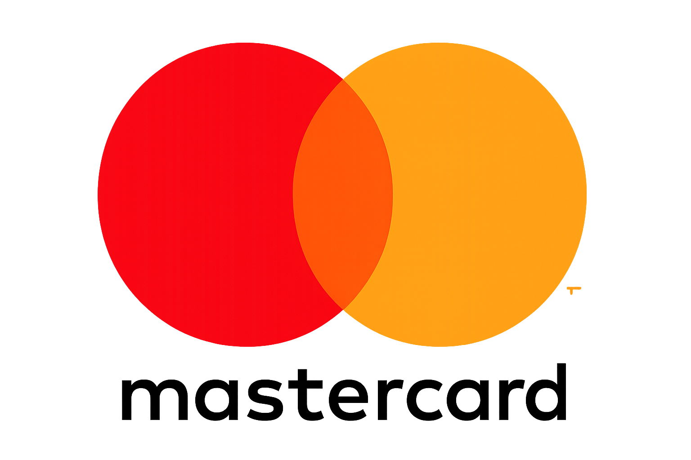

Preguntas Frecuentes
Resuelve tus dudas rápidamente
Cómo curar un mate de calabaza : Antes del primer uso, llenalo con yerba usada y agua tibia. Dejalo reposar 24 horas, retirás la yerba, raspás suavemente el interior y enjuagalo. Luego, dejalo secar boca arriba en un lugar ventilado. ¡Ya está listo para disfrutar!
Cómo curar un mate de algarrobo : Antes del primer uso, aplicá una fina capa de aceite vegetal en el interior y dejalo actuar unas horas. Retirá el excedente y listo. Después de cada uso, enjuagalo, secá el exceso de agua y dejalo ventilar para conservar la madera en óptimas condiciones.
- Canarias (sin palo)
- Uruguaya, intensa y amarga, ideal para quienes buscan un sabor fuerte y duradero. No tiene palo, lo que la hace más concentrada.
- Amanda Suave
- Argentina, con un sabor delicado y equilibrado, perfecta para quienes recién empiezan o prefieren algo más liviano.
- La Merced Barbacuá
- Sabor neutro y ahumado, ni muy fuerte ni muy suave, excelente para compartir en rondas largas sin saturar el paladar.
Sí, realizamos envíos a todo el país a través de Correo Argentino, asegurando cobertura nacional y seguimiento del paquete. También contamos con opciones de mensajería privada según tu ubicación, para mayor comodidad. Los tiempos de entrega pueden variar, pero siempre te mantenemos informado. Tu pedido viaja seguro y llega a donde estés.
Consultar costos de envío exactosAceptamos Mercado Pago, tarjetas de crédito/débito y transferencias bancarias.

Enjuagalo con agua caliente sin usar detergente. Para mates de calabaza, secá bien el interior después de cada uso y guardalo boca arriba para evitar hongos.